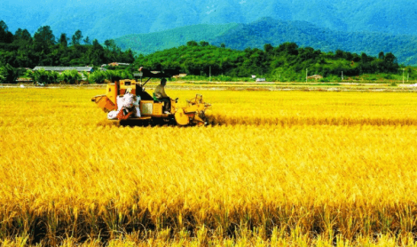
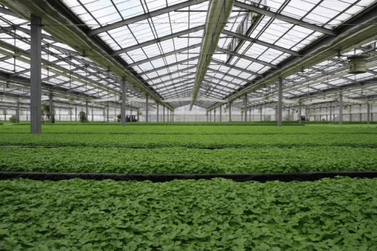
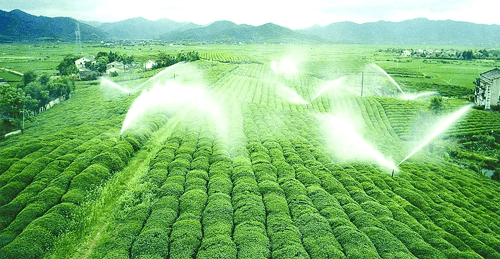

润农金服 | 农业金融发展的光明大道！
经过多年不懈的努力，我国农业不断迈上新台阶，已进入新的历史阶段。这是党中央发出的第十四个指导“三农”工作的一号文件。从中我们可以明确看到，中国的农业发展已经到了需要进行结构性改革的阶段。从严重的供给不足到了阶段性变化的供过于求和供给不足，因此在党中央的政策指引下，中国的“三农”企业已经成为了下一个风口。
“三农”企业要进行结构性的改革，产品要升级，设备要更新换代，科研投入要加大。未来的中国农业会走上科技农业，生态农业，产业化农业的道路，这些所有问题的解决都要归根于资金。然而，一直以来，资金短缺就是限制农业发展的主要原因之一。目前，大部分从业农业生产的还是家庭式小农经济，受限于资金短缺，这些生产单位想要转换产品类型或者扩大生产规模都非常困难。
而传统信贷方式具有效率低周期长，还款方式僵硬，需要抵押物等劣势，不适用于农业金融贷款。因此，在“三农”亟待进行改革转型的现在，一种行之有效的专用融资贷款模式是当今迫切需要的。农业金融将随着农村建立新型生产模式，发展生态农业，进行供给侧改革的过程得到巨大的发展和进步，成为金融投资市场的又一个热门板块。
润农金服看准时机，找准自身地位，抓住农村供给侧改革的大机遇，响应党中央政策号召，将主要业务项目放在广大的农村市场，设身处地地为农民朋友量身制定金融融资还款方案，为“三农”企业解决资金难题。润农金服致力于打造一家普及面广泛，真正让农民得到实惠的农村金融服务公司。
润农金服从产业金融切入，通过大数据筛选方式找到数十个核心目标，通过模型核算找到十几个适合进行金融投资的细分产业降低了金融风险；农业高风险之一在于5产品销路没有保障，润农金服与下游企业合作签订收购订单实现订单式农业生产，大大降低融资风险；润肤金服团队由百度、消费金融、恒生电子等高管组成，具有成熟的互联网金融从业经验，其创新产业风控模式已经得到了种子投资和A股上市公司的天使投资。
未来几年将是农村进行产业化农业发展和结构性改革的重要阶段，在这个阶段，农村金融行业将大有可为。润农金服也将会抓住机遇，攻坚克难，以减轻农业负担，帮扶“三农”企业为己任。农户通过与润农金服签约合作，扩大生产规模，促进产品转型，实现订单式农业，得到切实的实惠。以国家对农业发展的重视，对农民提高收入的关注，都必然导致未来谁能够实现农民的真正富裕谁就是最大赢家。润农金服从产业服务中要利润，与大型加工企业合作，让农户以“零利息”得到资金投入，与农户合作共赢，共同发展，必将成为农村金融行业中的一匹亮眼的黑马！